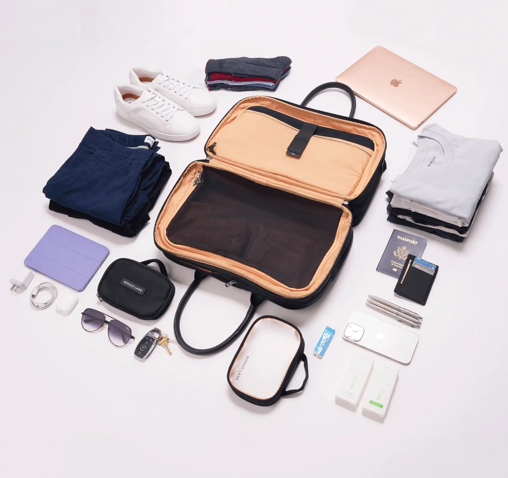
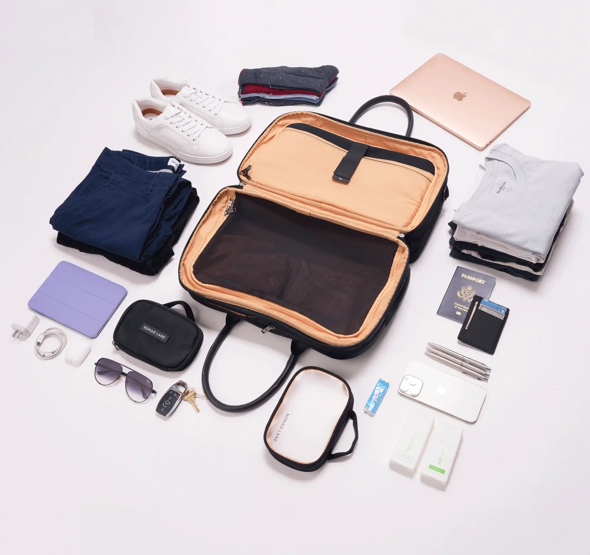

Last November, standing in the baggage claim at O'Hare after a three-day business trip to Chicago, I watched my colleague Sarah breeze past me toward the exit. Her flight had landed four minutes after mine. She was already in an Uber by the time I spotted my suitcase making its third lap around the carousel.
"I stopped checking bags two years ago," she told me later over dinner. "Haven't looked back since."
I assumed she was exaggerating—or that she'd simply accepted a life of wrinkled shirts and forgotten toiletries. But Sarah, a management consultant who logs 120,000 air miles annually, had stumbled onto something that a growing number of frequent travelers are discovering: the checked bag has become a relic of a different era of air travel, one where airlines didn't charge $35-70 per bag each way, where luggage rarely got lost, and where time wasn't money.
That era, as anyone who's flown recently knows, is over.
The $1,200 Question Nobody Asks
Consider the math that most travelers never bother to calculate. The average checked bag fee on domestic U.S. flights is now $35 for the first bag—up from $15 just a decade ago. For frequent flyers, that number compounds quickly.
Annual Cost of Checking Bags
- Average bag fee (one way)$35
- Round trip cost$70
- Business trips per year (moderate)15
- Personal trips per year4
- Total Annual Bag Fees$1,330
But the direct cost is only part of the equation. What airlines don't advertise—and what Sarah had intuitively understood—is the hidden tax that checked bags impose on your time.
According to the Bureau of Transportation Statistics, the average wait time at U.S. baggage carousels is 27 minutes. For travelers making 19 trips per year, that's over 17 hours annually spent watching the same suitcases circle past. At a consultant's billing rate, Sarah calculated, that idle time was costing her firm roughly $4,000 in lost productivity per year.
"I started thinking about it like an expense I could eliminate," she explained. "Not just the fees, but the time, the anxiety, the risk of lost luggage. The question became: what would it take to never need a checked bag again?"
The Carry-On Calculation Problem
The obvious answer—traveling with only a carry-on—has a significant limitation. Overhead bin space is finite and fiercely contested. Anyone who's boarded in Group 4 knows the sinking feeling of watching a flight attendant slap a "Checked at Gate" tag on your carefully packed roller bag.
Basic economy fares, which now represent nearly 40% of domestic ticket sales, often don't include overhead bin access at all. That leaves only one guaranteed piece of luggage real estate on a modern commercial flight: the personal item slot under the seat in front of you.
"The personal item is the last piece of carry-on space that airlines can't take away from you. It's the only luggage that's truly yours."
— Marcus Webb, Travel Industry AnalystThis is where traditional travel advice falls apart. The standard personal item—a laptop bag, a purse, a small backpack—was never designed to replace a suitcase. You can't fit three days of clothes into a briefcase, no matter how creatively you fold.
Or so I thought.
A Quiet Revolution at Gate B27
The shift began, as many travel trends do, with road warriors comparing notes. In the departure lounges and airline club rooms where frequent flyers congregate, a different kind of bag started appearing—something between a structured weekender and an organizational system disguised as luggage.

I first noticed the trend at a gate in Denver last spring. A woman in business attire was pulling more items from her black bag than seemed physically possible—laptop, chargers, a toiletry kit, what appeared to be two days' worth of clothing in packing cubes. The bag itself looked like something you'd carry into a board meeting, not a piece of luggage.
"It's called a Bento Bag," she said when I asked. "Like the Japanese lunch box. Everything has a compartment."
The name, I'd later learn, came from Nomad Lane, a company founded by two former tech workers who'd grown tired of the choice between checking bags and traveling light. Their insight was almost comically simple: the maximum personal item dimensions allowed by most airlines (roughly 18" x 14" x 8") represented a surprising amount of volume—if, and only if, that space was engineered with surgical precision.
 

The Science of Strategic Packing
What makes these purpose-built personal items different from a standard duffle or backpack isn't just size—it's architecture. Traditional bags treat interior space as a single cavity. You stuff items in, they shift during transit, and you spend ten minutes at your hotel reconstructing your packing system.
The new generation of travel bags borrows from industrial design principles: designated zones for different item categories, compression systems that lock contents in place, and—crucially—quick-access pockets that eliminate the need to unpack your entire bag to find your laptop at security.
The travelers we studied who switched to structured personal items reported not just cost savings, but significantly lower travel-related stress. There's a psychological benefit to knowing exactly where everything is and that your bag will always fit.
After my conversation at the Denver gate, I decided to run an experiment. For my next five business trips—three nights maximum each—I'd travel exclusively with a personal item. No carry-on. No checked bag. Just the space under my seat.
The first trip was, frankly, stressful. I'd purchased the bag the woman recommended—the same Nomad Lane Bento Bag—but I didn't trust the system yet. I rolled clothes too loosely. I packed redundant chargers. I brought a "just in case" jacket that I never wore.
By trip three, something clicked. I'd learned which clothes traveled well and which wrinkled. I'd discovered that most hotel toiletries were acceptable. I'd realized that the psychological comfort of "having options" was costing me real money and time.
By trip five, I understood what Sarah had been talking about. I walked off the plane and directly to ground transportation. No carousel. No anxiety. No lost time.
The Numbers After Six Months
I've now completed 23 trips using only a personal item. Here's what the math looks like:
My 6-Month Personal Item Experiment
- Bag fees avoided$1,610
- Time saved (no baggage claim)10+ hours
- Lost luggage incidents0
- Gate-check forced0
- Missed connections due to bag delays0
But perhaps more valuable than the savings is what I've gained: the ability to book the cheapest fare without worrying about baggage add-ons. The freedom to change flights at the last minute without rechecking luggage. The small but meaningful pleasure of walking past the baggage claim, every single time.

The Bag Featured in This Story
Nomad Lane Bento Bag
The personal item that started the carry-on-free movement. Fits under any airline seat, holds 3+ days of clothes, includes a padded laptop sleeve. $298 with free shipping.
Learn More at Nomad LaneWho This Isn't For
To be clear: personal-item-only travel isn't for everyone. If you're packing for a two-week European vacation, you'll need more luggage. If you require specialized equipment—ski boots, scuba gear, camera rigs—this strategy won't work. And if you genuinely enjoy the ritual of packing a large suitcase, there's no reason to change.
But for the growing population of frequent flyers who've grown tired of the baggage game—the fees, the waits, the occasional lost bag that arrives two days after you do—there's a different way to fly.
It just requires rethinking what a personal item can be.

Last month, I ran into Sarah again at LaGuardia. She was, as usual, headed directly to the exit while I—old habits die hard—briefly considered checking the carousel "just to be sure."
"Still no checked bags?" I asked.
She smiled. "Still no checked bags."
This time, I was right behind her.